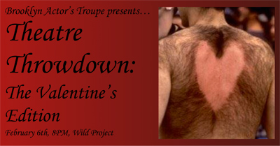

| 
Wild Project & The Brooklyn Actor's Troupe Presents...
Theatre Throwdown: Valentine's Edition
February 6 @ 8PM
"A ten minute play festival meets poetry slam and they both go for a beer." Join us at the beautiful Wild Project theatre for the fourth iteration of the THEATRE THROWDOWN! Indie theatre companies are given three weeks and five writing prompts to create a brand spanking new play.
This edition features:
Mostly Chicks Theatre Co.
OK MeatPlace
Nu Puppis
Harvey
Occupy Verona
& The Brooklyn Actor's Troupe
More about the participating theater companies:
Mostly Chicks Theatre Co. will be presenting work written and directed bySarah Villegas and featuring Shiori Ichikawa, Catie Taffe, Francis Shanley,Sage Rose Buchalter and Sarah Villegas
OK MeatPlace is a group sketch team featuring Kevin Delano, Kate Agustin, Jennifer Guiffre, TD Sidell, and Sarah Miles
Nu Puppis is an east coast art collective create the kind of progressive culture necessary for humanity's survival in space. Nu Puppis features Co-Artistic Directors Connor Scully and Jenna Kraynak and collective members Mahlon Raufi and Becky Granger
Find Nu Puppis on Twitter and Instagram: @sculliosis
Occupy Verona is known for bringing live Shakespeare to the streets of New York City. This ensemble features lead actor Joe Raik and ensemble members TBA.
Online at: www.occupyverona.com
Harvey is an acting ensemble featuring actors Hope Morawa, Jackson McLaskey, Lisa Youngs, Kelly Robinson, and Leslie Monge
The Brooklyn Actor's Troupe is the co-host of Theatre Throwdown at the Wild Project. Their most recent full production was Jack Fellows' The Last Poet on Mars. Their ensemble for this Theatre Throwdown features writer, director & actor Jack Fellows, and actors Hannah Kaplan, Mike Toperzer,Harrison Greene, Susannah Resnikoff and Michael John Improta.
|